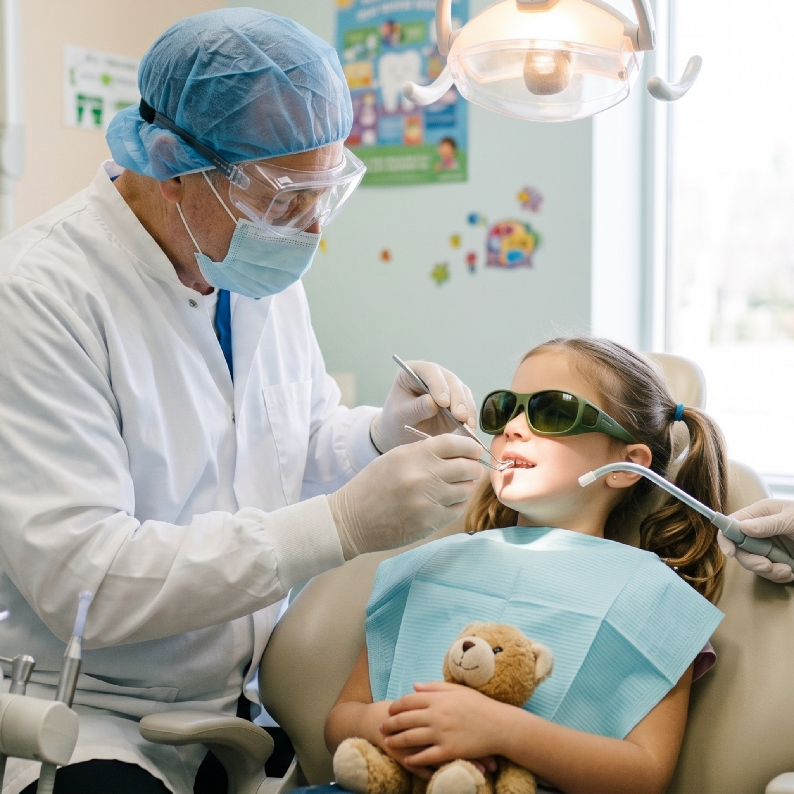

Para que a técnica de reforço positivo seja efetiva, sempre aplicar imediatamente após o comportamento desejado, explicar qual foi esse comportamento, não pular essa etapa sempre que ocorrer; considerar as preferências de interesse do paciente e reforçar pequenas conquistas desde a primeira consulta.
Exemplos práticos durante a consulta odontológica:
- Após a criança sentar na cadeira odontológica: “Ótimo! Você sentou muito bem.”
- Após abrir a boca para o exame clínico: “Excelente! Você abriu a boca como um jacaré.”
- Após completar a profilaxia ou aplicação de flúor: entrega de adesivo ou pequeno brinquedo. “Tome um adesivo !” você foi muito corajoso(a)!”
